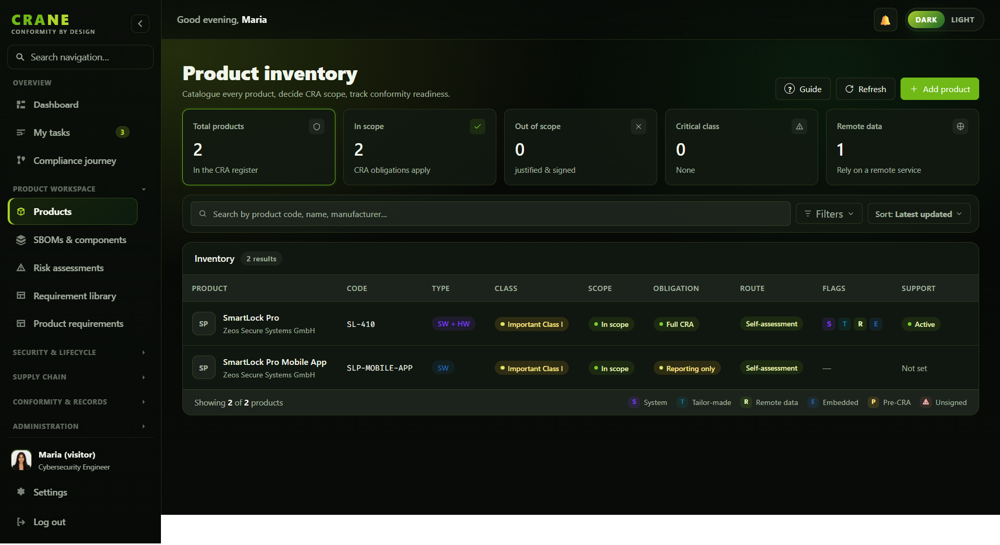
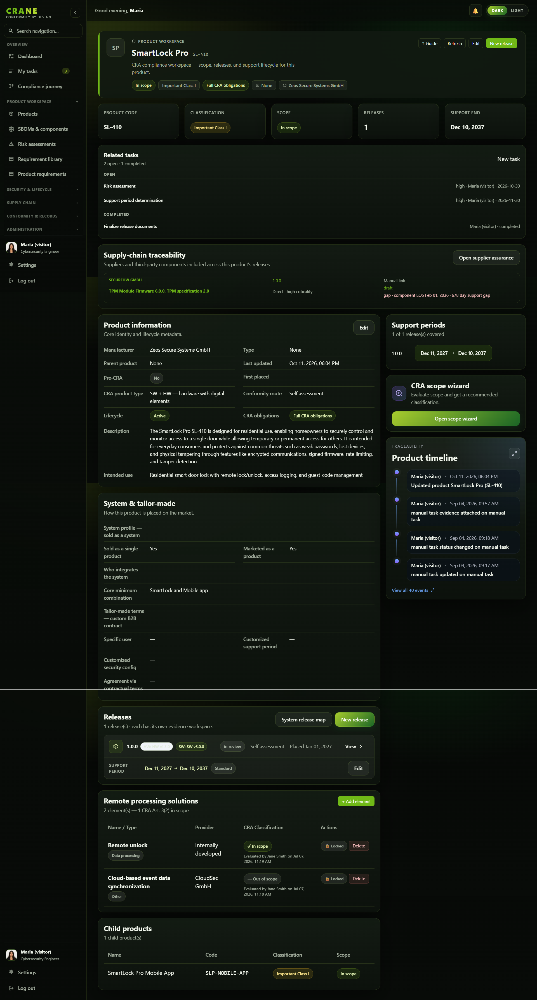
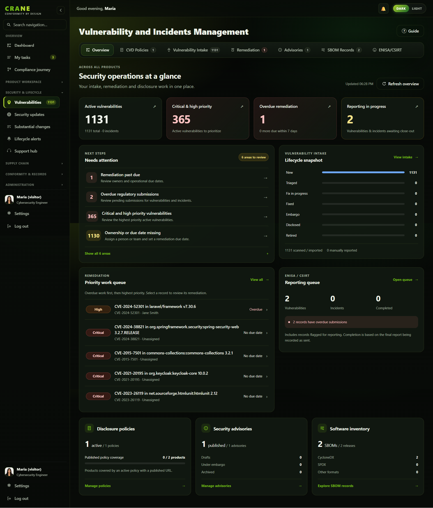

Using CRANE
Core Concepts
CRANE models the CRA the way the regulation is structured. Understanding seven objects — products, releases, SBOMs, gates, vulnerabilities, risk assessments and the audit trail — is enough to use the whole platform confidently.
Everything in CRANE hangs off a product. Releases, SBOMs, assessments and evidence are all scoped to a product and a version — which is what makes the audit trail coherent.
Products
A product is a thing you place on the EU market that has digital elements — a connected sensor, a firmware image, a desktop application, a cloud-backed appliance. Each product carries the CRA-relevant properties and the justifications that explain why those properties apply.
Products hold hardware and firmware/software versions, an assigned support period, and a coverage map against the obligations that apply to them. The product registry is the single inventory a Notified Body or internal assessor reviews first.
Product classification
The CRA (Regulation (EU) 2024/2847) defines four product tiers based on risk level, each with different conformity assessment routes:
| Classification | Typical examples | Conformity assessment |
|---|---|---|
| Default | Most products with digital elements that are not listed in Annex III or IV | Manufacturer self-assessment (Module A) |
| Important — Class I | Identity management systems, browsers, password managers, VPNs, network management systems, routers/modems/switches, many security-related components listed in Annex III Class I | Self-assessment is allowed only if harmonised standards, common specifications, or an applicable European cybersecurity certification scheme are used. Otherwise, a Notified Body assessment is required. |
| Important — Class II | Hypervisors, firewalls, certain industrial IDS/IPS products, container runtimes, and other Annex III Class II products | No pure self-assessment. Must use a Notified Body conformity assessment or an applicable European cybersecurity certification scheme. |
| Critical | Smart cards, secure elements, smart meter gateways, secure cryptoprocessors and other Annex IV products | A Notified Body is always involved. The CRA does not automatically require a European cybersecurity certification scheme for all critical products. Certification may be used where available and may become mandatory only if the Commission specifies this via further measures. |
CRANE lets you record and justify the classification for each product, which determines the evidence standard your release gates should enforce.
Remote processing elements (Article 3(2))
Cloud backends, update servers and remote APIs that are necessary for the product to function are pulled into CRA scope as remote data processing solutions. CRANE includes a step-by-step classification wizard to help you assess each element against the Article 3(2) criteria and document your rationale — producing a repeatable, auditable scope decision.

Product workspace
Select a product in the inventory to open its workspace. The SmartLock Pro example below brings related tasks, supplier and component traceability, product information, support periods, and the activity timeline together. Further down, releases, remote processing solutions, and child products keep the product relationships visible.

Versions & releases
A release is a specific, shippable version of a product. CRA obligations attach to what you actually place on the market, so releases — not products in the abstract — are where evidence accumulates: the SBOM that shipped, the vulnerabilities known at the time, the risk assessment that was approved, and the gate that was passed.
Because releases are versioned, CRANE can show how a product's security posture changed over time — which is exactly the question an auditor or a substantial-change review asks.
Release lifecycle
Each release moves through a defined lifecycle:
| Status | Meaning |
|---|---|
| Draft | In preparation — evidence is being collected, gate not yet passed |
| Released | Placed on the market — all gate requirements satisfied |
| Recalled | Withdrawn — a critical issue was found post-release |
Version history is immutable. A recalled release stays in the record with its evidence intact — the audit trail never loses information.
SBOMs
A Software Bill of Materials lists the components inside a release. CRANE ingests CycloneDX SBOMs and does four things with them:
- Quality scoring — how complete and well-formed the SBOM is (0–100, graded A–F).
- CRA validation — whether it carries the fields the CRA Phase 2 requirements expect.
- NTIA minimum-elements — a check against the recognised baseline: supplier name, component name, version, unique identifiers, dependency relationships, SBOM author, and timestamp.
- Diff view — what changed between two SBOM versions, so you can see added, removed and version-bumped components at a glance.
Once a component inventory exists, CRANE maps it against vulnerability data automatically.
Aim for a quality score above 80 before submitting to a Notified Body. Scores below 60 typically indicate missing supplier information or version strings, which assessors flag immediately.

Vulnerabilities
CRANE runs a PSIRT-style workflow over the components found in your SBOMs. It tracks CVEs, prioritises them, and records how you decided to respond.
Scanning
Optional Trivy scans plus OSV and NVD data identify CVEs in your components automatically.
EPSS scoring
FIRST.org EPSS scores estimate exploitation likelihood so you fix what actually matters first, not just what scores highest on CVSS.
VEX assessments
Record whether each CVE actually affects your product, with documented justification — turning raw scanner output into defensible compliance evidence.
VEX statuses
A Vulnerability Exploitability eXchange (VEX) assessment records one of four statuses per CVE:
| Status | Meaning |
|---|---|
| Not affected | The vulnerability is present in a component but does not affect this product (e.g. the vulnerable code path is not reachable) |
| Affected | The product is affected — action required |
| Fixed | The vulnerability has been remediated in this or a subsequent release |
| Under investigation | Impact is not yet determined |
The result is a defensible answer to the question every vulnerability raises: does this affect us, and what did we do about it?

Vulnerability and incident overview
Open Security & Lifecycle → Vulnerabilities to review active findings, critical and high-priority issues, overdue remediation, and reporting in progress. The overview highlights records that need an owner or due date, shows the intake lifecycle, and links to the remediation work queue and ENISA / CSIRT reporting queue.
Use the tabs to move between CVD policies, vulnerability intake, remediation, advisories, SBOM records, and reporting. The screenshot shows an example dataset; the totals reflect that instance at the time of capture.

Release gates
A release gate is a structured readiness checklist that must pass before a release ships. Gates turn "we think we're compliant" into "here is the evidence." A typical gate requires:
- An approved risk assessment.
- A current SBOM that passes CRA and NTIA validation.
- No unresolved critical vulnerabilities (or documented VEX justifications for each).
- Supporting evidence such as a pentest report or security test results.
Gates are configurable per product, so a low-risk utility and a safety-critical device can hold different bars. Gate status is recorded in the audit trail — you can show exactly when and by whom a release was approved.
Risk assessments
CRANE supports STRIDE, TARA or a custom methodology, each with an approval workflow. A risk assessment is a first-class object attached to a release, which is what lets a release gate require an approved assessment rather than just an uploaded file.
Supported methodologies
| Methodology | Best for |
|---|---|
| STRIDE | Software products, general threat modelling — Spoofing, Tampering, Repudiation, Information disclosure, DoS, Elevation of privilege |
| TARA | Automotive and industrial — Threat Analysis and Risk Assessment per ISO/SAE 21434 |
| Custom | Any sector-specific or organisation-specific framework |
Assessments are versioned and immutable once approved. If a new threat is discovered, you create a new version — the previous approval is preserved in the history.
The audit trail
Every action in CRANE is written to an immutable, timestamped log. The audit trail is not a feature you turn on — it is the backbone that makes the rest of the platform trustworthy. When an assessor asks "who changed this, and when?", the answer is already recorded.
The audit trail records:
- Every create, update and delete operation on every object.
- Who performed the action (user ID and email).
- The exact timestamp.
- The previous and new values for changed fields.
- Login and authentication events.
Even admin users cannot remove audit log entries. This is intentional — the value of the audit trail depends entirely on its tamper-evident nature.

How the pieces fit together
A product accumulates releases. Each release carries an SBOM, which surfaces vulnerabilities, which are triaged and assessed with VEX. A risk assessment is approved. A release gate checks that all of this evidence exists before the release ships. The audit trail records each step. At any point you can export a technical documentation package built from this evidence — ready for conformity assessment or a Notified Body review.